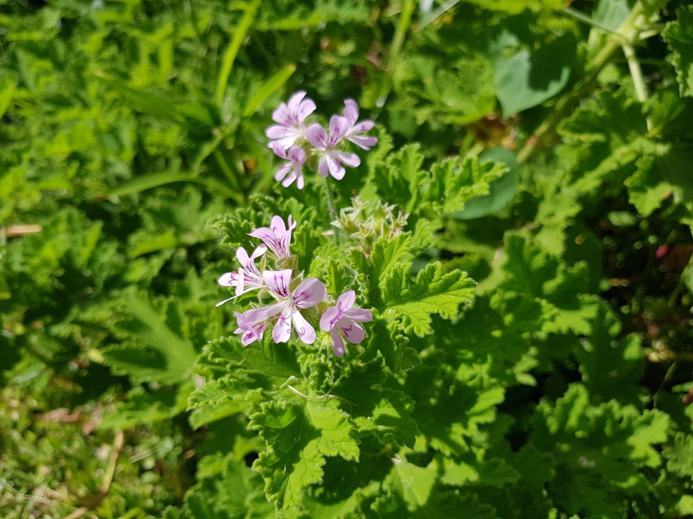
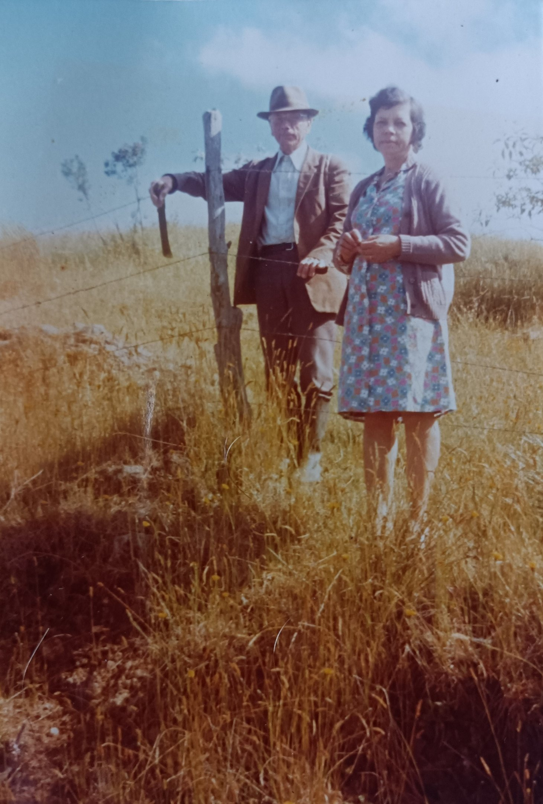
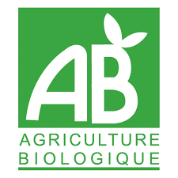
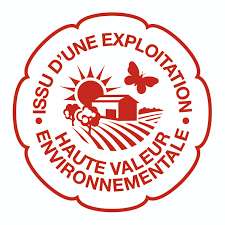
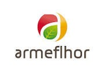
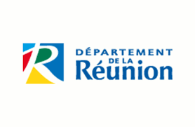

🌿
Huile essentielle de Géranium
Notre PAPAM phare : le Géranium Bourbon Rosat, distillé sur l'exploitation. Une signature olfactive emblématique de La Réunion.
Géranium Bourbon RosatUne exploitation familiale en polyculture & élevage, cultivée en agroécologie.
Depuis les années 1940, une même famille prend soin de cette terre des hauts de la Chaloupe. Aujourd'hui, nous y cultivons des plantes à parfum et des fruits, sans aucun intrant.
Nous diversifions l'exploitation autour des PAPAM (Plantes Aromatiques à Parfum et Médicinales) et d'un verger de fruits tempérés. Le Géranium Bourbon Rosat en est le fleuron.
Notre PAPAM phare : le Géranium Bourbon Rosat, distillé sur l'exploitation. Une signature olfactive emblématique de La Réunion.
Géranium Bourbon RosatL'eau florale issue de la distillation, douce et parfumée, pour le soin et le bien-être au quotidien.
Eau floraleNos PAPAM récoltées et séchées avec soin. Des haies de fleurs jaunes et d'Ambaville nourrissent aussi la biodiversité.
PAPAM séchéesUn verger de pruniers, pommiers et poiriers cultivé sans aucun intrant. Des fruits vendus bruts, au rythme des saisons.
Prunes · Pommes · PoiresAyant à cœur de préserver l'environnement, nous cultivons sans aucun intrant. Notre approche agroécologique fait de la biodiversité une alliée plutôt qu'une contrainte.


Localisée dans les hauts de la Chaloupe à Saint-Leu, notre exploitation a été créée par mes grands-parents dans les années 40. Au fil du temps, elle a connu diverses activités : élevage, maraîchage, culture de géranium…
Reprise par mon père, principalement pour l'élevage, elle se prépare aujourd'hui, en famille, à une nouvelle transmission — en organisant la diversification de ses activités tout en préservant ce que nous ont laissé les anciens.
Nous sommes engagés dans une démarche de certification et accompagnés par les acteurs de la filière réunionnaise.




Pour commander, connaître nos points de vente ou simplement échanger sur l'exploitation, nous sommes à votre écoute.